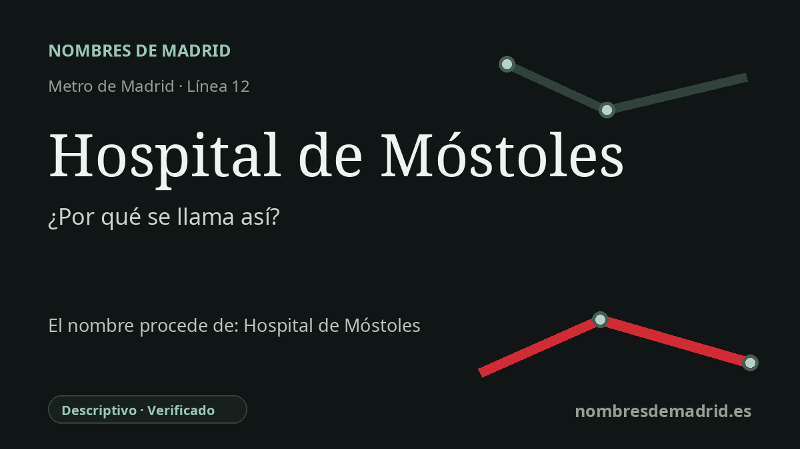

Publicado el · Investigación de Nombres de Madrid · Cómo verificamos cada origen · 8 fuentes consultadas
Respuesta rápida
Hospital de Móstoles toma su nombre del Hospital Universitario de Móstoles, situado junto a la estación. La parada de MetroSur abrió con la línea 12 en 2003 y dio acceso ferroviario directo a un hospital inaugurado en 1983.
La historia del nombre
El nombre de la estación es descriptivo: Hospital de Móstoles indica que esta parada de la línea 12 da servicio al Hospital Universitario de Móstoles. El Consorcio Regional de Transportes la sitúa en la zona tarifaria B2, con acceso en la calle del Río Sella, y la propia información de acceso del hospital señala que MetroSur mejoró la llegada al centro desde la parada llamada "Hospital de Móstoles".
Detrás del nombre está una de las instituciones públicas clave del Móstoles contemporáneo. El Hospital Universitario de Móstoles pertenece a la red pública del Servicio Madrileño de Salud y atiende a Móstoles y Arroyomolinos. Su denominación actual también lo diferencia de otros hospitales posteriores del municipio, en una ciudad que pasó de ser una localidad periférica a formar parte de la gran corona metropolitana madrileña.
La reseña histórica oficial del hospital indica que el edificio fue construido por iniciativa privada y adquirido después por el Ministerio de Sanidad, haciéndose eco de una reivindicación vecinal que reclamaba un hospital desde hacía tiempo. Fue inaugurado oficialmente el sábado 25 de junio de 1983 por el ministro de Sanidad Ernest Lluch, y el propio centro lo presenta como el primer hospital comarcal de Madrid. Antes de entrar en funcionamiento, el proyecto fue modificado por los arquitectos Fernando Flórez Plaza y Luis López Fando.
MetroSur llegó dos décadas después. La línea 12 se puso en servicio el 11 de abril de 2003 como línea circular que enlaza Alcorcón, Móstoles, Fuenlabrada, Getafe y Leganés; dentro de Móstoles, la página de MetroSur de la Comunidad de Madrid enumera Hospital de Móstoles como la cuarta estación y la localiza en la calle Río Ebro, bajo un parque existente. Así, el hospital que toma su nombre del municipio pasó también a dar nombre a un hito de transporte.
Existe una capa conmemorativa posterior. En 2020 el Pleno municipal de Móstoles aprobó una moción para pedir a la Comunidad de Madrid y al CRTM que el hospital y la parada de MetroSur pasaran a llamarse Ernest Lluch, quien había inaugurado el centro y quedó estrechamente vinculado a la Ley General de Sanidad de 1986. Esa solicitud no parece haber cambiado la denominación oficial: las fuentes sanitarias y de transporte siguen usando Hospital de Móstoles.